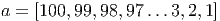
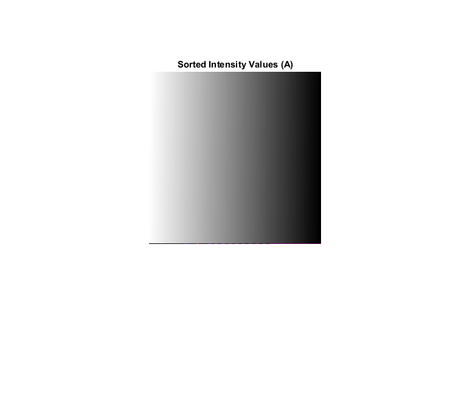
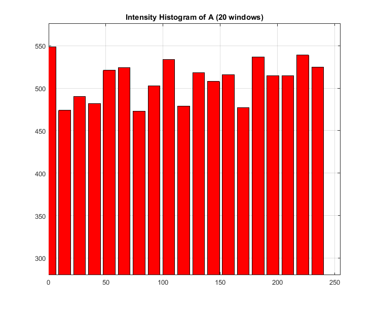
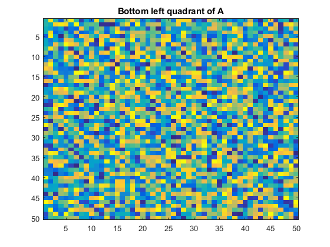
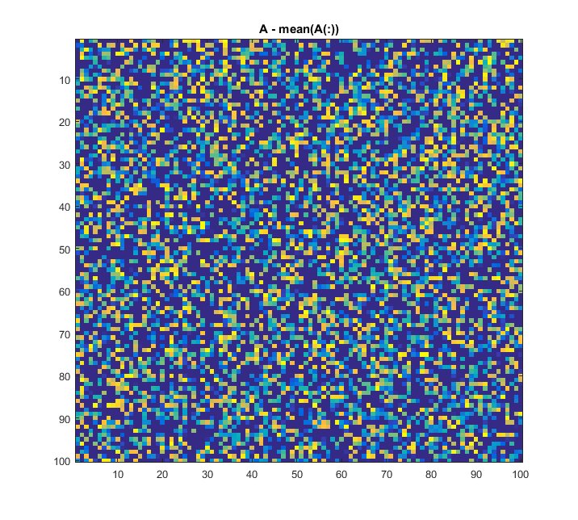
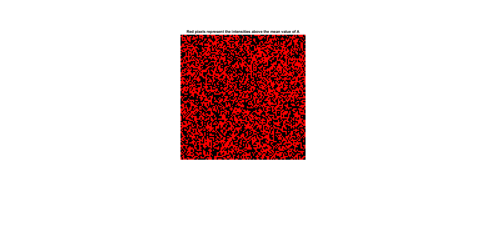
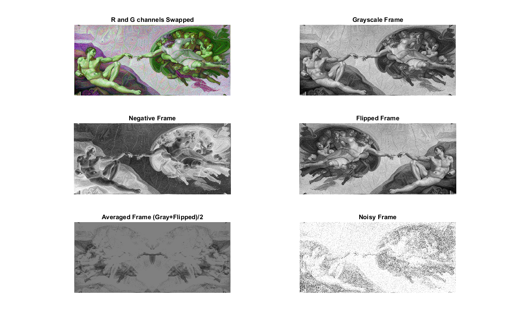
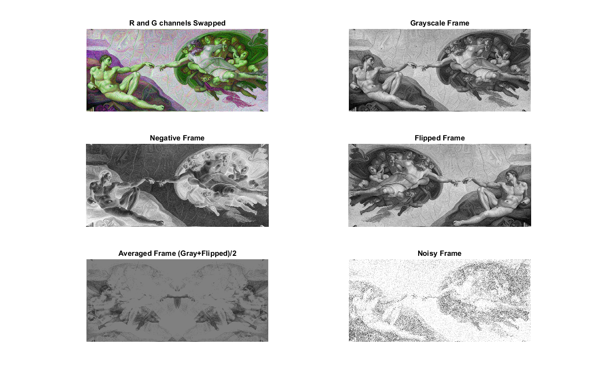

- (a)
- Creates a row vector containing random permutations of numbers between 1 and 1000.
- (b)
-
Line
1:
Creates
a
matrix:

Line 2 assigns the second row of x to the variable b.
![b = [4, 5,6]](Murat_Ambarkutuk_PS01x.png)
- (c)
-
Creates
a
matrix:

Line 2 assigns the all the values the variable b in column vector form.
![b = [ 1, 4, 7, 2, 5, 8, 3, 6, 9 ]′](Murat_Ambarkutuk_PS03x.png)
- (d)
-
Line
1
creates
the
column
vector
f
[1×5]
with
the
normally
distributed
random
values.
Line 2 sets another variable and fills it with the elements of f which are above 0.
- (e)
-
Line
1
sets
a
row
vector
[1×10]
with
zeros
and
adds
0.5
to
each
element
of
it.
![x = [0,0, 0,0,0,0,0,0,0,0 ] + 0.5](Murat_Ambarkutuk_PS04x.png)
![x = [0.5,0.5,0.5,0.5,0.5,0.5,0.5, 0.5,0.5,0.5]](Murat_Ambarkutuk_PS05x.png)
![y = [1,1, 1,1,1,1,1,1,1,1 ] × 0.5](Murat_Ambarkutuk_PS06x.png)
![y = [0.5,0.5,0.5,0.5,0.5,0.5, 0.5,0.5,0.5,0.5]](Murat_Ambarkutuk_PS07x.png)

![z = [1,1,1,1, 1,1,1,1,1,1]](Murat_Ambarkutuk_PS09x.png)
- (f)
-
Line
1
creates
a
row
vector
[1×100]
which
contains
the
sequence
starting
from
1
to
100
(inclusive).
![a = [1,2,3,4 ...98,99,100 ]](Murat_Ambarkutuk_PS010x.png)

- (a)
- The function returning n trials of 6-sided dice roll is given below. (Please find the diceTrials.m file .zip file.) The contents of diceTrials.m:
- (b)
-
(c)
(d)
(e)
1%% clear workspace , and command window, close all figures already open.
2clear all, close all, clc;
3%% PS0-1.3a
4diceResults = diceTrials(99);
5%% PS0-1.3b
6% y = [1, 2, 3, 4, 5, 6]’
7y = (1:6)’;
8% z = [1, 3, 5; 2, 4, 6]
9z = reshape(y,[2,3]);
10%% PS0-1.3c
11% find the max value of matrice y and of which indice
12[x, I] = max(y);
13% convert indice to subscripts (row and column number)
14[r, c] = ind2sub(size(z),I);
15%% PS0-1.3d
16% create vector v = [1, 8, 8, 2, 1, 3, 9, 8]
17v = [1,8,8,2,1,3,9,8];
18% alter the value of vector x
19% the problem can be solved by two different approach
20% 1 - x = numel(v(v==1))
21% 2 - x = sum(v==1)
22x = numel(v(v==1));
The source matrix created and used as input file is depicted below.

- (a)
- Result of sort process. 
- (b)
- Intensity histogram of A is given below. 
- (c)
- The bottom left quadrant of A is depicted below. Please also find the attached outputXPS0Q1.mat in the zipped folder. 
- (d)
- Please find the attached outputYPS0Q1.mat file. 
- (e)
-
Since
the
first
matrix
A
is
randomly
created
in
uint8
data
class
[0 - 255],
pixels
appear
the
same
when
the
frame
is
displayed
with
imagesc()
and
imshow().
Hence,
they
both
give
the
same
output.
Please
find
the
attached
outputYPS0Q1.mat
file.

The
contents
of
PS0Q1.m:
1%% clear workspace , and command window, close all figures already open.
2clear all, close all, clc;
3figure(1);
4A = uint8(randi(255,[100,100]));
5figure(1);
6imshow(A);
7title(’Randomly Generated Intensity Profiles (A)’)
8save(’inputAPS0Q1.mat’, ’A’);
9load(’inputAPS0Q1.mat’, ’A’);
10%% PS-0 4a
11A_sorted = sort(reshape(A,[numel(A), 1]), ’descend’);
12A_sorted = reshape(A_sorted, size(A));
13figure(2);
14imshow(A_sorted);
15title(’Sorted Intensity Values (A)’)
16%% PS-0 4b
17bins = 20;
18maxA = max(A(:));
19minA = min(A(:));
20range = (maxA-minA)/bins;
21hist = zeros(1,bins);
22y = zeros(1,bins);
23for i=1:20
24 hist(i) = numel(A(A>=(minA+(i-1)*range) & A<(minA+(i)*range)));
25 y(i) = minA+(i-1)*range;
26end
27figure(3);
28bar(y,hist, 0.8, ’r’);
29axis([0 255 min(hist) max(hist)*1.05])
30grid on;
31title(’Intensity Histogram of A (20 windows)’);
32%% PS-0 4c
33% X = A_sorted(size(A,1)/2:size(A,1), 0:size(A,2)/2);
34X = A(size(A,1)/2+1:size(A,1), 1:size(A,2)/2);
35save(’outputXPS0Q1.mat’,’X’);
36figure(4);
37imagesc(X);
38title(’Bottom left quadrant of A’);
39%% PS-0 4d
40Y = A - mean(A(:));
41save(’outputYPS0Q1.mat’,’Y’);
42figure(5);
43imagesc(Y);
44title(’A - mean(A(:))’);
45%% PS-0 4e
46Z = uint8(zeros(size(A_sorted,1),size(A_sorted,2),3));
47ind = find(A>mean(A(:)));
48[u, v] = ind2sub(size(A),ind);
49for i=1:numel(ind)
50 Z(u(i),v(i),:) = [255,0,0];
51end
52figure(6);
53subplot(1,2,1), imagesc(Z); title(’Red pixels represent the values above the mean value of A, imagesc()’);
54subplot(1,2,2), imshow(Z); title(’Red pixels represent the values above the mean value of A, imshow()’);
55imwrite(Z, ’outputZPS0Q1.png’);
 Results: 
Results: 